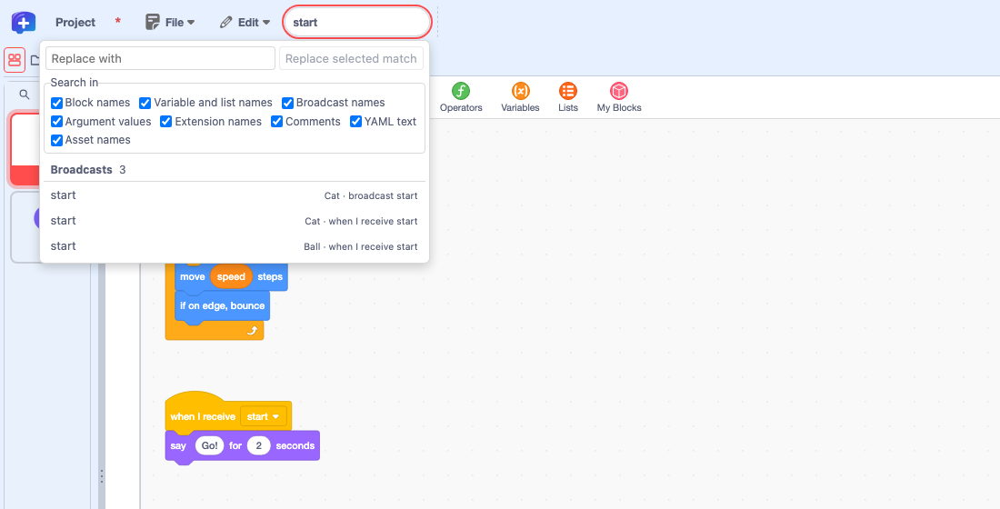

Feature guide 7/12 · Updated November 14, 2026
Search and replace across the project
From the search box in the menu bar, you can search every sprite, the stage, and even YAML documents embedded in the project at once, and replace matches one at a time.
7.1 Search the whole project
Type a term into the "Search" box in the menu bar to search across every sprite and the stage. Results are grouped by kind.
Search and replace share a single panel. ⌘F (Ctrl+F on Windows) moves the cursor to the search box. Press Esc to close the panel. The replace shortcut is described in 7.3.

Choosing a result opens the matching sprite's code or asset, or the YAML document, and shows the match. The panel stays open so you can go on to replace. If you choose with the Enter key, the panel closes as it moves to the result. When there are many results, scrolling to the bottom of the list loads more.
Finding blocks that read or change a variable
Clicking a "Read" or "Write" count in the "Properties & Variables" table (Edit properties, variables and lists) opens this panel with that variable name and shows a "Variable access" switch at the top. Use "Read" and "Write" to switch between blocks that read the variable and blocks that change it. Sprite variables and global variables with the same name are counted separately. Press "Return to all search results" to go back to a normal search. The replace field is hidden while this filter is active.
Searching across sprites and the stage · Improved project search · Searching from variable counts
7.2 Choose what to search (including YAML in the project)
Use the "Search in" checkboxes above the results to narrow what is searched.
| Search in | Result heading |
|---|---|
| Block names | Blocks |
| Variable and list names | Variable uses, List uses |
| Broadcast names | Broadcasts |
| Argument values | Block argument values |
| Extension names | Extension uses |
| Comments | Comments |
| YAML text | YAML text |
| Asset names | Costumes, Backdrops, Sounds |
"Broadcast names" classifies sending and receiving with the same rules as the Messages table. "YAML text" searches the body of YAML documents that a supporting extension has embedded in the project, such as a Kamishibai YAML script. In projects without such documents, this scope returns no results.
7.3 Replace the selected match
In a normal search, the "Replace with" field is always shown at the top of the panel. If the search box contains a term, pressing ⇧⌘F (Ctrl+Shift+F on Windows) or choosing "Find and Replace" in the "Edit" menu moves the cursor to this field. If the search box is empty, pressing ⇧⌘F moves the cursor to the search box. Select one result and press "Replace selected match" to replace just that one match. There is no way to replace across the whole project at once. Results that cannot be replaced are marked "Read only".
For "YAML text" results, the button becomes "Replace in preview". Check the replaced content in a preview that shows the matching position; it is saved if the document passes validation.
Block replacements can be reverted with "Undo" in the code area. To keep the replacements in the project file, save the project at the end.
Replacing the selected match · Search and replace shortcuts · Merging the search box and search dialog